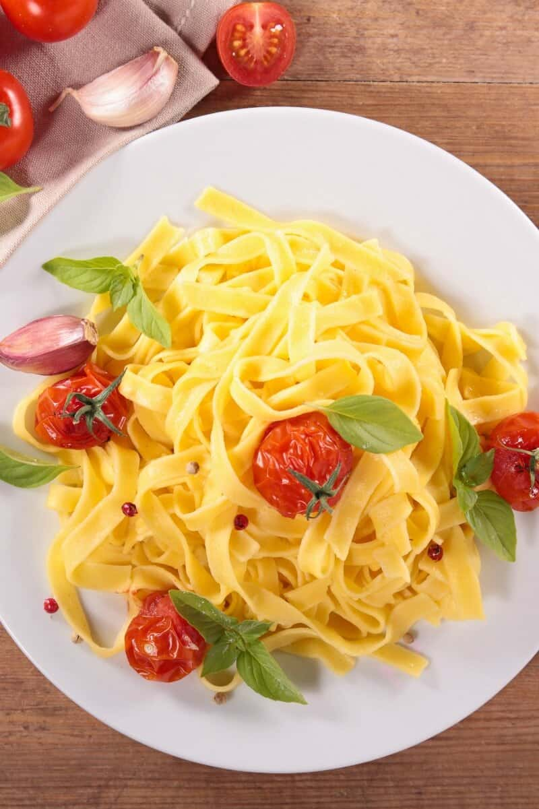

Ingredients
- 2 Egg Yolk
- 2 Mozzarela Cheese
Description
This is NOT your Italian style pasta made with flour and wheat. If you are familiar with a keto diet, there are no grains allowed. However, this zero carb pasta is a fabulous alternative for when you are craving a massive bowl of spaghetti or noodles…minus the carbs.
Recipe credits:
Steps
- In a microwave safe bowl, melt your mozzarella cheese until melted. Let it cool for 2 minutes. Whisk in your egg yolks and form the mixture into a ball of dough.
- Line a large baking tray with parchment paper and transfer the ball of dough onto it. Place another sheet of parchment paper on top and using a rolling pin, roll out the dough until thin.
- Remove the dough from the refrigerator. Using a pizza slicer, cut thin strips of dough. Refrigerate overnight.
- Bring a large pot of water to a boil. Once boiling, add the noodles and gently stir for 30 seconds. Remove from the heat and drain the water. Run under water before transferring to bowls and top with your favorite low carb pasta toppings.
Notes
- Pasta can keep in their uncooked state for up to 1 week. Lightly cover it in plastic wrap to ensure it doesn't dry out.
- To Freeze Place chilled noodles in a ziplock bag and store them in the freezer for up to 1 month. Be sure to thaw it completely, before reslicing if needed.
Nutrition
- Serving: 1serving | Calories: 236kcal | Carbohydrates: 2g | Protein: 12g | Fat: 25g | Fiber: 1g | NET CARBS: 1g